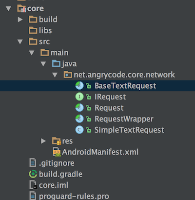
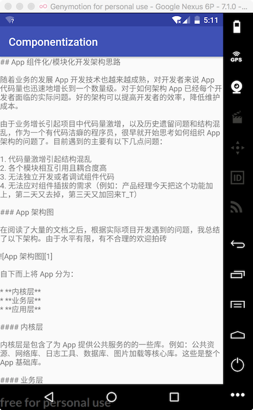

App 模块化之路——如何封装网络请求框架
在 App 开发中网络请求是每个开发者必备的开发库，也出现了许多优秀开源的网络请求库。例如
这些网络请求库很大程度上提高程序猿的编码效率。但是随着业务的发展，App 变得越来越大，我们将这些网络请求库加入到项目中直接使用，对我们业务类的入侵是非常强的。如果要进行业务分离时，这些网络请求代码将是一个阻止我们进一步工作的绊脚石。对开发者来说是非常痛苦的。
因此我们构建的网络请求框架要可以解决以下问题：
- 分离业务与网络请求代码
- 网络库可以很容易的被替换
- 网络库可以很方便的复用
所以在 App 组件化/模块化开发架构思路 一文中，我们把网络请求作为内核层的一个组件。
0x00 封装第三方网络请求接口
一般来说，目前绝大部分 App 的数据请求都是使用 HTTP 协议，而数据交换的协议使用 json 格式。因此可以封装一个通用的请求接口。（当然还有其他一些协议，例如微信的 mars ，但是封装的思路是一致的，本文为了简单说明，暂时使用通用网络请求框架，不排除以后会对 mars 的封装）
首先预览一下框架结构

0x01 IRequest
这个类封装了网络请求的通用接口，定义请求接口 doRequest() 、获取请求连接 getUrl() 、获取请求方法 getHttpMethod() 等。
public interface IRequest {
enum HttpMethod {
GET, POST, PUT, DELETE
}
//... 为了减少代码的篇幅，省略一些对本文说明不重要的片段，本文代码可以在
//https://github.com/wecodexyz/Componentization 获取到
void addParams(Map<String, String> params);
String getUrl();
Pair<Integer, String> doRequest();
boolean isSupportCache();
void addHeader(String key, String value);
HttpMethod getHttpMethod();
//... 为了减少代码的篇幅，省略一些对本文说明不重要的片段，本文代码可以在
//https://github.com/wecodexyz/Componentization 获取到
}
0x02 Request
这个类是个抽象类，对 IRequest 的实现。目前是一个简单封装的实现。
0x03 RequestWrapper
这个类是一个泛型类，继承于 Request 并对第三方请求库的封装。例如本文就是对 okhttp 的封装，而泛型 T 对象就是请求得到的具体数据类型。如果要对其他请求库进行封装，就可以参考这个类的实现。
注意这个类封装是纯粹的网络请求，不应该包含业务类相关的代码。否则无解决上文提出的三个问题。
public abstract class RequestWrapper extends Request {
//... 为了减少代码的篇幅，省略一些对本文说明不重要的片段，本文代码可以在
//https://github.com/wecodexyz/Componentization 获取到
@Override
public Pair<Integer, String> doRequest() {
Pair<Integer, String> result = new Pair<>(ERROR_NETWORK, "");
okhttp3.Request request = null;
if (getHttpMethod() == HttpMethod.POST) {
request = requestBuilder().url(getUrl()).post(requestBody()).build();
} else {
request = requestBuilder().url(getUrlWithParams()).build();
}
try {
Response response = mClient.newCall(request).execute();
if (response.isSuccessful()) {
result = new Pair<>(response.code(), response.body().string());
} else {
result = new Pair<>(response.code(), response.message());
}
} catch (IOException e) {
Log.e(TAG, e.getMessage());
}
return result;
}
//... 为了减少代码的篇幅，省略一些对本文说明不重要的片段，本文代码可以在
//https://github.com/wecodexyz/Componentization 获取到
}
关键的代码是在 doRequest() 方法中，该方法实现了网络请求的代码，返回一个 Pair<Integer,String> 对象，该对象的 first 属性是一个请求 code ，用于标识网络请求码（即是网络请求返回的200,404,301等）。而 second 就是网络请求的数据。
0x04 BaseTextRequest
这个类就是网络请求框架提供给业务类使用的一个接口。本文一开始就提出来 json 作为交互数据请求的协议。那么此类的封装就有利于业务数据的访问。
public abstract class BaseTextRequest<T> extends RequestWrapper {
public BaseTextRequest(Context context) {
super(context);
}
public Flowable<T> request() {
return Flowable.fromCallable(new Callable<Pair<Integer, String>>() {
@Override
public Pair<Integer, String> call() throws Exception {
Pair<Integer, String> result = doRequest();
return result;
}
}).flatMap(new Function<Pair<Integer, String>, Publisher<T>>() {
@Override
public Publisher<T> apply(@NonNull Pair<Integer, String> pair) throws Exception {
if (isSuccessful(pair.first)) {
return Flowable.just(onRequestFinish(pair.second));
}
return Flowable.just(onRequestError(pair.first, pair.second));
}
});
}
@Override
public boolean isSupportCache() {
return true;
}
protected abstract T onRequestFinish(String result);
protected abstract T onRequestError(int code, String message);
}
由于请求网络是耗时的操作，rxjava2 来实现网络请求异步操作。request 是对 RequestWrapper.doRequest() 方法的封装，并得到一个 Flowable 对象。同时定义了 onRequestFinish() 和 onRequestError() 两个方法。
这两个方法就是具体业务类要处理的逻辑。
0x05 SimpleTextRequest
假设有一个请求业务数据接口，返回数据是一个字符串。那么我们使用我们的框架就是这样来使用。本文例子是请求我们项目中的 README.md 的内容。用起来非常简单，只要继承于 BaseTextRequest，并实现 getUrl() 、onRequestFinish() onRequestError()、getHttpMethod() 这几个方法。
注意严格来说这是一个业务类，所以是不应该放在 core 目录下的。
public class SimpleTextRequest extends BaseTextRequest<String> {
public SimpleTextRequest(Context context, Map<String, String> params) {
super(context);
addParams(params);
}
@Override
public String getUrl() {
return "https://raw.githubusercontent.com/wecodexyz/Componentization/master/README.md";
}
@Override
public HttpMethod getHttpMethod() {
return HttpMethod.GET;
}
@Override
protected String onRequestFinish(String result) {
//这里可以实现对 json 数据的解析，例如使用 JSONObject
//对象解析具体的业务
return result;
}
@Override
protected String onRequestError(int code, String message) {
return message;
}
}
0x06 测试请求框架
request = new SimpleTextRequest(this, null);
request.request()
.subscribeOn(Schedulers.computation())
.observeOn(AndroidSchedulers.mainThread())
.subscribe(new Consumer<String>() {
@Override
public void accept(@NonNull String s) throws Exception {
textView.setText(s);
//这里返回接口请求的数据
}
}, new Consumer<Throwable>() {
@Override
public void accept(@NonNull Throwable throwable) throws Exception {
textView.setText(throwable.getMessage());
}
});
本文运行的结果
